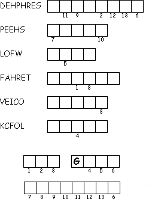

This week's lessons: Acts 4:5-12, Psalm 23, 1 John 3:16-24, John 10:11-18
This
week's lessons: Acts
4:5-12, Psalm
23, 1
John 3:16-24, John
10:11-18
Elementary School Pew-work
Listen hard to the Gospel. Afterward, fill in the blanks in this story:
11I
am the good ___________, and the good ___________ gives up his life
for his _________. 12Hired workers are not like the
____________. They don't own the _________, and when they see a wolf
coming, they run off and leave the _________. Then the wolf attacks
and scatters the flock. 13Hired workers run away because
they don't care about the _________.
14I am the good
___________. I know my _________, and they know me. 15Just
as the Father knows me, I know the Father, and I give up my life for
my _________. 16I have other _________ that are not in
this _________ pen. I must bring them together too, when they hear my
voice. Then there will be one flock of _________ and one ___________.
17The Father loves me, because I give up my life, so
that I may receive it back again. 18No one takes my life
from me. I give it up willingly! I have the power to give it up and
the power to receive it back again, just as my Father commanded me to
do.
Who does Jesus say he is?
__________________________________________________________________________
2. What does the good shepherd do?
__________________________________________________________________________
3. What does Jesus say about his sheep?
__________________________________________________________________________
4. What will Jesus do with his other sheep?
__________________________________________________________________________
|
 |
|
Next Week: Acts 8:26-40, Psalm 22:25-31, 1 John 4:7-21, John 15:1-8